Your Complete
Annotation & Training Pipeline
DualAnnotator is an all-in-one desktop tool for thermal and standard image datasets. Convert raw sensor files, annotate solo or collaboratively, prepare and split your data, train YOLO or U-Net models, evaluate results, and register the final model — all from a single app, entirely offline.
Use the tabs above to explore each feature in detail, or scroll through the pipeline overview below to understand the full workflow.
The Full Pipeline
DualAnnotator covers every stage of the ML lifecycle in a single desktop app. Start with raw thermal images, annotate them solo or with a team, prepare your dataset, train, evaluate, and register your model — all without leaving the tool.
If your images come from a thermal or specialized camera, they arrive as raw 16-bit
binary .raw
files that no standard viewer can open. The RAW → PNG tab converts
entire folders of these files into standard 8-bit PNGs in seconds using
multi-threaded NumPy processing. You can apply normalization modes,
scientific colormaps, and crop to a region of interest — all before
a single annotation is drawn.
The core of the app. Open any image folder and start drawing annotations
using the full toolset — bounding boxes, polygons, bezier curves, circles,
ellipses, and hollow shapes. Three distinct rendering modes let you build
YOLO detection datasets, U-Net segmentation masks, or concentric zone
layouts from the same canvas. Everything autosaves 800ms after your last
action — no manual saving required.
Working in a team? The built-in Collab tab
lets multiple annotators work on the same project simultaneously over a local
network — one person hosts, others join. Every shape and class change syncs
in real-time to all connected users, no cloud subscription needed.
Before training, your annotated images need to be organized into the right folder structure. The Data Prep tab handles splitting your dataset into Train, Validation, and Test sets using configurable percentage sliders, copying or moving images and their label files into the correct layout that YOLO and U-Net training scripts expect.
Kick off a YOLO or U-Net training run directly from the app without touching the terminal. Select your model architecture, point it at your prepared dataset, configure epochs and batch size, and hit Train. The Training tab streams live loss and metric graphs as the model trains, so you can watch it converge in real time and stop early if needed.
Export your trained model to a deployment format and immediately test it against new images — all within the app. Supports ONNX export for cross-platform inference. The test panel lets you run the exported model on single images or entire folders and visualize the detections overlaid on the original image so you can validate quality before shipping.
Every model you train and export is automatically registered in the Registry tab. It keeps a versioned record of all your models — their architecture, training dataset, performance metrics, and export paths. You can load any past model directly from the registry into the Export & Test panel without having to hunt for the file manually.
Coin Rotator
A specialized data augmentation utility that lives outside the main annotation pipeline. It is purpose-built for coin and circular object datasets and can be used independently at any stage of your workflow.
The Coin Rotator takes your annotated coin images and programmatically generates rotated variants at configurable degree steps — massively expanding your training dataset without any additional manual annotation. The rotated images and their labels are output ready for immediate use in training.
Interface Overview
The Annotate tab is the core of DualAnnotator. The workspace is split into three panels — a file browser on the left, the annotation canvas in the center, and the class manager on the right. A shortcut bar across the bottom shows every active keyboard shortcut at a glance.

Lists all images in the loaded folder. Status badges show each image's annotation progress at a glance. Click any file to load it, or use the Prev / Next buttons.
The main drawing area. Shows the current image with all annotations drawn on top. The active mode (YOLO / UNet / Concentric) and current shape type are displayed in the top-left corner of the canvas.
Add, rename, and delete annotation classes. Each class gets a unique colour. Select the active class before drawing — every new shape is assigned to whichever class is currently highlighted.
Class Management
Before you can draw anything, you need at least one class. Use the class panel on the right to build your label set. The highlighted class is the active class — every shape you draw is automatically assigned to it and outlined in its colour.
Adding a Class
Click the Add Class button in the class panel. A colour picker appears — choose a colour for the class, then type its name. The new class is added to the list and becomes the active class automatically.

Selecting the Active Class
Click any class in the panel to make it active. The selected class is highlighted and all new shapes drawn from that point will belong to it. You can switch the active class mid-annotation at any time.

Editing a Class
Double-click a class (or use the edit button) to rename it or change its colour. Any shapes already assigned to this class update their colour on the canvas instantly.

Reordering Classes
Drag a class up or down in the list to reorder it. The order here matches the class IDs written into the exported label files, so keep it consistent across your project.

.txt label files.Deleting a Class
Select a class and click the Delete button to remove it. Any shapes on the canvas that were assigned to the deleted class remain visible but lose their class assignment.
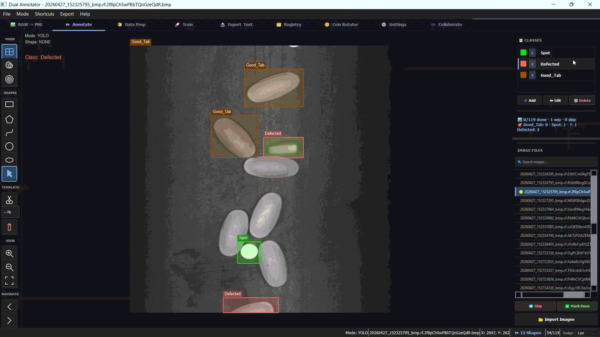
coin: 3 · defect: 1) and overall project progress (annotated /
WIP / skipped).Annotation Modes
Switch between three modes using the mode buttons in the toolbar. The active mode controls which shape tools are available and how annotations are exported.
For training standard detection models. Only bounding boxes are available. Each box
exports as a YOLO-format .txt label (normalised cx, cy, w, h).
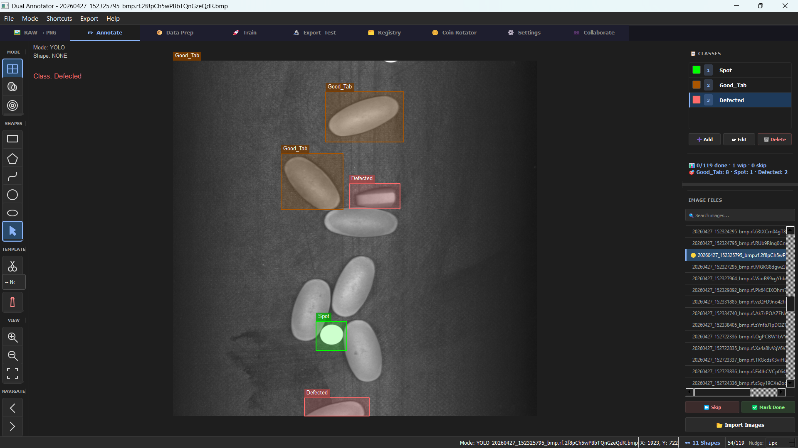
.txt files.Full access to all shape tools — boxes, polygons, bezier polygons, circles, ellipses, and hollow/ring shapes. For generating pixel-accurate segmentation masks.
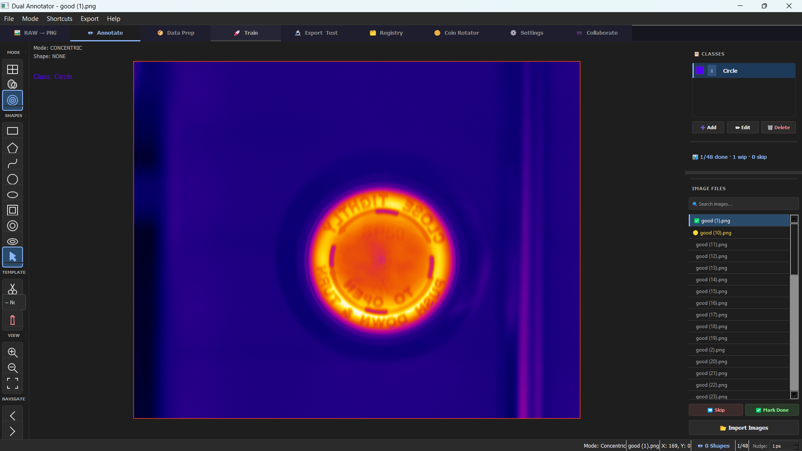

Specialised mode for annotating concentric circular targets (e.g. coin edges, ring targets). Uses an inner-wins renderer — each shape you draw has all previously-drawn shapes automatically cut out of its fill, creating distinct nested zones.


How to draw concentric zones
Select a shape tool (circle, polygon, ellipse — any type) and draw the smallest central shape first. Assign it a class. This becomes the core zone and fills completely.
Draw the next ring around the first shape. The renderer automatically subtracts the inner shape's area from this fill — only the region between the two boundaries is coloured. Assign it a different class.
Draw the largest outer boundary last. All previously-drawn shapes are subtracted from its fill, leaving only the outermost ring region coloured. Continue adding more shapes outward for as many zones as needed.
All Shape Types
Select a shape tool by pressing its keyboard shortcut or clicking its button in the toolbar. Then click and drag on the canvas to draw. For polygons and bezier shapes, click to place each vertex and double-click (or press Enter) to close the shape.
Axis-aligned rectangle. The default tool for YOLO detection — fast to draw and universally supported by all export formats.
- Click and drag to draw the box
- 4 handles appear, drag any to resize
- Drag the interior to move the whole box
- Arrow keys nudge by 1 px when selected
- Ctrl + drag to duplicate in place

Freeform straight-edged shape for precise segmentation outlines around irregular objects.
- Click to place each vertex one by one
- Press Enter to close the shape
- Drag any white square vertex handle to reshape
- Drag a blue mid-edge dot to insert a new vertex
- Press Esc while drawing to cancel

Like Polygon but edges curve smoothly between vertices — ideal for annotating round or organic shapes.
- Click to place anchor points, double-click to close
- White square handles move anchor vertices
- Yellow diamond handles control the curve at each vertex
- Drag diamonds away from the anchor to increase curvature

Perfect circle defined by a centre point and radius. Great for coins, bolts, and any circular object.
- Click to set the centre point
- Drag outward to set the radius
- 4 handles on the cardinal points to resize
- Drag the interior to reposition the centre

Ellipse with independently adjustable horizontal and vertical radii — for oval or slightly circular objects.
- Click and drag corner-to-corner of the bounding box
- Handles on each axis endpoint — drag each independently
- Drag the interior to move the ellipse
- Arrow keys nudge when selected

Hollow rectangle — like a picture frame with a transparent centre. For rectangular ring-shaped regions.
- Click and drag to set the outer bounds
- Resize like a bounding box using 8 handles
- Right-click → adjust thickness to change the inner cutout size
- Drag the interior to reposition
Hollow circle — outer ring with a proportional hole in the centre. Perfect for circular targets with a void in the middle.
- Click to set the centre, drag to set the outer radius
- Inner hole scales proportionally with the outer
- Right-click → adjust thickness to change the ring width
- Drag the interior to reposition the whole shape

Ellipse with a proportional elliptical hole — for non-circular ring-shaped targets like oval coin rims.
- Click and drag the same way as a regular ellipse
- Inner ellipse is proportional to the outer automatically
- Right-click → adjust thickness for a custom ring width
- Handles on all 4 axis endpoints to resize

Templates & Stamp Tool
Any shape — regardless of type — can be saved as a reusable template. Templates remember the exact size and proportions of the original. Use the Stamp tool to place copies instantly without redrawing from scratch.
Draw and select a shape, then right-click it and choose Save as Template. You'll be prompted to name it. The template is saved persistently and appears in the template dropdown.
Open the template dropdown in the toolbar and choose the template you want to stamp. Templates can also be deleted from the dropdown using the trash button.
Click on the canvas to place the template at that point, then drag to fine-tune position before releasing. The shape is placed with the same class as currently selected.


Hollow / Inner Cutout
Any existing shape can have an inner cutout punched through it — making it hollow. This is used when the region of interest is a ring or frame shape that the built-in Frame/Donut tools don't cover exactly.
Works on: Box, Circle, Ellipse, Polygon, Bezier Polygon.
Click the shape you want to make hollow. It will highlight in yellow when selected.
Right-click the selected shape to open the context menu and choose Add Inner Cutout. A thickness dialog will appear near the shape.
Drag the slider or type a pixel value. A yellow dashed preview shows the inner boundary in real time. Choose Inward (shrink from outer edge) or Outward (expand from a smaller inner), then click Apply.


Template Matching
Template Matching uses OpenCV to scan the current image and automatically place bounding boxes around regions that look like an existing annotation. It's ideal for images with many repeated objects of the same shape and class.

How to use
Annotate one instance of the object you want to find — any shape type works as a template source.
Right-click the annotation on the canvas and choose Template Matching…. The panel opens and the Templates counter updates to show the shape added.
Threshold — how closely a region must match the template (default 0.70). Lower it to
catch more matches; raise it to reduce false positives.
NMS — Non-Maximum Suppression overlap tolerance (default 0.85). Lower values merge
detections that are closer together.
The engine scans the full image. New bounding boxes are placed for every match and the Status bar shows New: X · Skipped: X · Total: X. Existing annotations are never duplicated — the detector skips any region already covered by a shape.
Panel overview
Lists the number and type of shapes added as templates. Click Clear Templates to start fresh.
Enable the Live updates checkbox so detection re-runs automatically 400 ms after every slider adjustment — no need to click Run each time.
Select & Move
Click any shape to select it — it highlights in yellow and resize handles appear. With a shape selected you can move it, resize it, nudge it, or duplicate it.
Click and drag a shape's interior to reposition it. Stays within image bounds automatically.
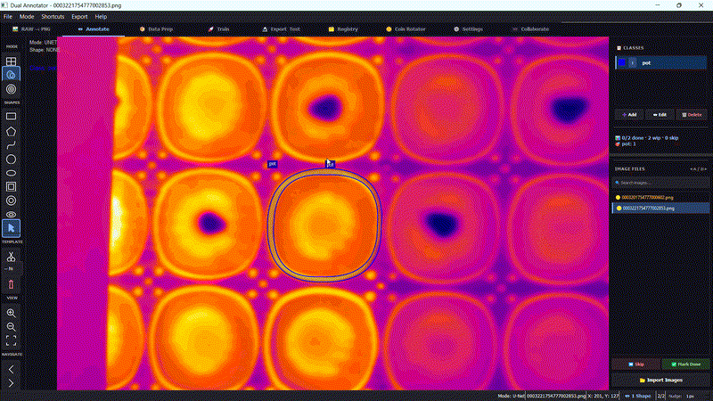
Drag any white square handle at the corners and edges. For polygons, each vertex handle is individually draggable.

With a shape selected, press the Arrow keys to move it by a set number of pixels at a time for precise positioning.

Hold Ctrl and drag a selected shape to instantly create a copy at the drag destination, leaving the original in place.
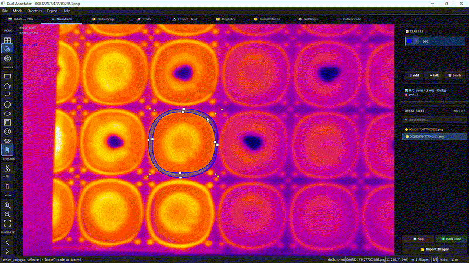
Multi-Select
Select multiple shapes at once to move, copy, or delete them as a group.


Click and drag on an empty area of the canvas to draw a blue dashed selection rectangle. Any shape that intersects the rectangle is selected when you release.
Hold Shift and click individual shapes to add or remove them from the current selection one by one.
Selects every shape on the current image at once. A blue group bounding box is drawn around all selected shapes with the count shown.
Copy & Paste
Copy one or many shapes and paste them back onto the same image — or navigate to another image and paste there. Pasted shapes are offset slightly from the original so they don't overlap.

Copy the selected shape (or selected group) and paste it. The pasted copy is placed 20px offset from the original and stays selected so you can immediately drag it to the right position.
Right-clicking a selected shape or a multi-select group shows Copy, Paste, and Delete options alongside shape-specific actions like Save as Template or Add Inner Cutout.
Undo & Redo
Every shape operation — draw, move, resize, delete, paste, hollow — is tracked. Press Ctrl + Z to undo and Ctrl + Y to redo. Up to 50 steps are kept in memory.
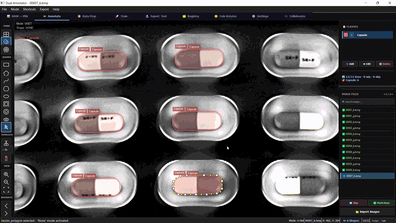
Zoom & Pan
Scroll the mouse wheel up to zoom in and down to zoom out. Zoom is always centred on your cursor so the area under your mouse stays in place. You can also use the + / − buttons in the toolbar.

Press Space once to activate pan mode — the cursor turns into a hand. Click and drag to scroll around. Press Space again to deactivate and return to your previous tool. You can also pan by holding the middle mouse button and dragging, or by holding Ctrl + scroll wheel.

Snap the image back to fill the canvas area in one click. Two ways to do it — click the Fit to Screen button in the toolbar, or press Ctrl + F.

Keyboard Shortcuts
| Key | Action |
|---|---|
| B | Bounding Box tool |
| P | Polygon tool |
| Q | Bezier Polygon tool |
| C | Circle tool |
| E | Ellipse tool |
| F | Frame (hollow rect) tool |
| O | Donut (hollow circle) tool |
| H | Hollow Ellipse tool |
| Tab | Jump to next unannotated image |
| Ctrl + Z | Undo |
| Ctrl + Y | Redo |
| Ctrl + C | Copy selected shape / group |
| Ctrl + V | Paste copied shape / group |
| Ctrl + A | Select all shapes |
| Del | Delete selected shape / group |
| Ctrl + Drag | Drag-copy selected shape / group |
| Arrow Keys | Nudge selected shape by 1 px |
| Space | Toggle Pan mode |
| Scroll | Zoom in / out at cursor |
| Ctrl + E | Export annotations |
| Ctrl + F | Fit image to screen |
| Esc | Deselect all / cancel drawing |
Exporting Annotations
Press Ctrl + E or go to Export → Open Data Exporter to open the export dialog. Choose a format, configure the options, and click Export.
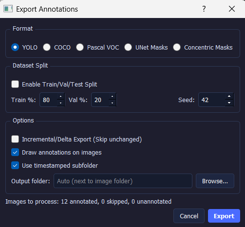
Export Formats
One .txt per image —
class cx cy w h (normalised). Includes a data.yaml.
Single annotations.json with
bounding boxes in COCO format.
One .xml per image in
VOC/LabelImg format.
Binary .png masks —
0/1 for training or 0/255 for visualisation.
Grayscale masks with concentric ring annotations encoded as separate intensity levels.
Options
Enable to split the exported files into train/,
val/, and test/ folders using configurable percentages. Disable to export
all files flat into a single folder.
Only exports images whose annotations have changed since the last export — skips unchanged files to keep things fast on large datasets. Enabled by default.
Overlays annotation outlines on the exported images — useful for a quick visual check of what was exported.
Wraps the export inside a folder named with the current date and time so successive exports never overwrite each other.
Leave blank to save the export next to your image folder automatically, or click Browse… to pick a custom destination.
Complete Export Flow

UNet Mask Scale — 0/1 vs 0/255


How It Works
The Collaboration feature lets a team annotate the same project simultaneously over a local network. One person hosts a session, shares a Project ID, and everyone else joins. No internet connection is needed — it runs entirely on your LAN using Python's standard library networking.
-
1Selects the image folder on their machine
-
2Starts the server to generate a Project ID
-
3Shares the Project ID with the team
-
4Annotates locally — all changes save to their disk
-
5Monitors connected annotators and live activity
-
1Enters the Project ID and their name
-
2Connects — image list loads from host automatically
-
3Switches to the Annotate tab to begin
-
4Images stream on demand — no folder needed
-
5Annotations sync back to the host in real time

Host a Session
Go to the Collab tab in the app, fill in the host form, and click Start Hosting.
Click Browse and choose the folder containing your PNG images. This is the folder all annotators will work from — it loads into the main window too.
The default port is 8765. Change it only if another service on your
machine is already using that port.
A unique Project ID is generated (e.g. DA-ORSXG5DT…) that encodes your
IP and port. Click Copy to Clipboard and share it with your team.

Join a Session
Go to the Collab tab in the app and fill in the Join form.
Paste the Project ID shared by the host into the Project ID field
(e.g. DA-ORSXG5DT…).
Type a display name — this is shown to the host in their connected annotators list and appears in the activity log next to your actions.
Click Connect to Session. The image list loads from the host and the app switches to the Annotate tab. No folder selection is needed — images stream on demand.
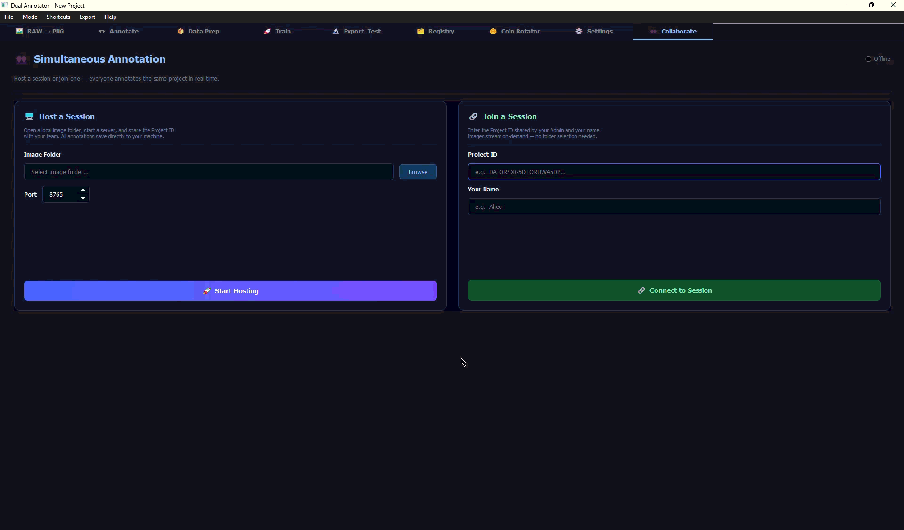
Image Locking & Status
To prevent two annotators from editing the same image simultaneously, a locking system is applied automatically. When you open an image, it is locked to your username. The lock is released when you navigate to a different image.

Images currently locked by another annotator show a 🔒 badge in the file list so you know to skip them and pick a different image.
The Collab tab's client view shows a live Current Locks list — every locked image and who is annotating it — updated every 2.5 seconds.
A floating notification appears briefly in the top-right corner when another annotator joins or leaves the session, so you always know who is online without checking the dashboard.
Toast notification shown when a user joins — click to enlarge
What is RAW → PNG?
Thermal and specialized cameras output raw binary files (.raw, .tif,
.tiff) that standard image viewers cannot open. The RAW → PNG tab batch-converts entire
folders of these files into standard 8-bit PNGs in seconds using multi-threaded NumPy processing — ready
to be annotated immediately after.
You can preview any image live, draw a crop region, choose a colormap, and adjust normalization before converting the entire batch.

Step 1 — Select Input Folder
Click Browse next to the Input field and select the folder
containing your raw thermal files. The app accepts .raw, .tif,
.tiff, .png, and .dcm files by default — editable in the Extensions
field.
Once selected, the output folder is automatically set to a converted_pngs/ subfolder inside
your input directory.
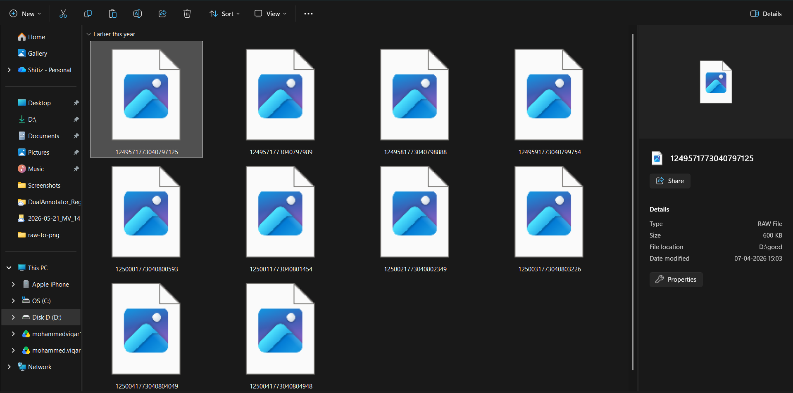
converted_pngs/ subfolder inside it. The file count
shown reflects how many matching files were found.Step 2 — Preview Loads Automatically
As soon as you select a folder, the first file loads into the preview canvas on the right. The preview updates live whenever you change the Colormap or Normalization dropdowns — no need to re-select the folder.
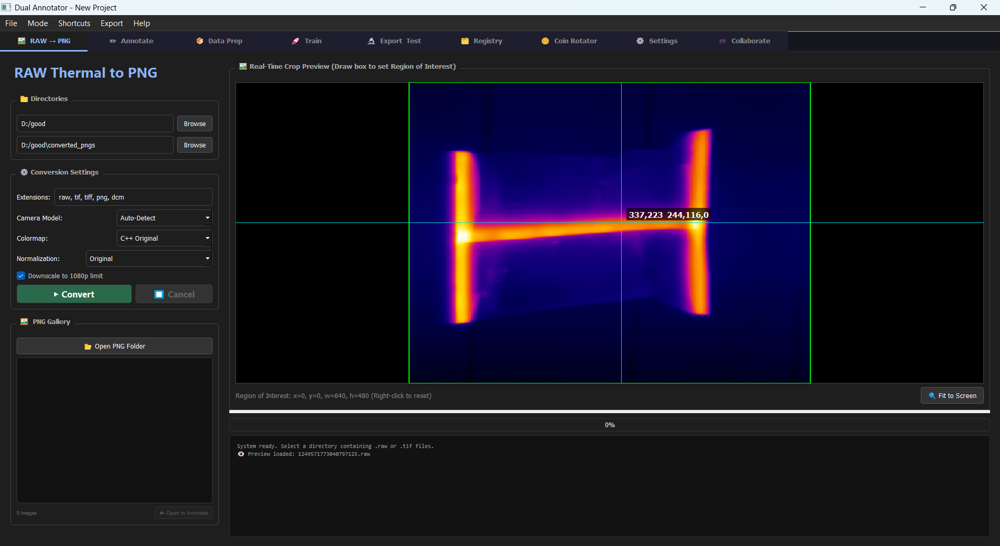
Step 3 — Draw Crop (ROI)
If you only want a specific region of each image, left-click and drag on the preview canvas to draw a green crop rectangle. This Region of Interest is applied to every file in the batch during conversion.
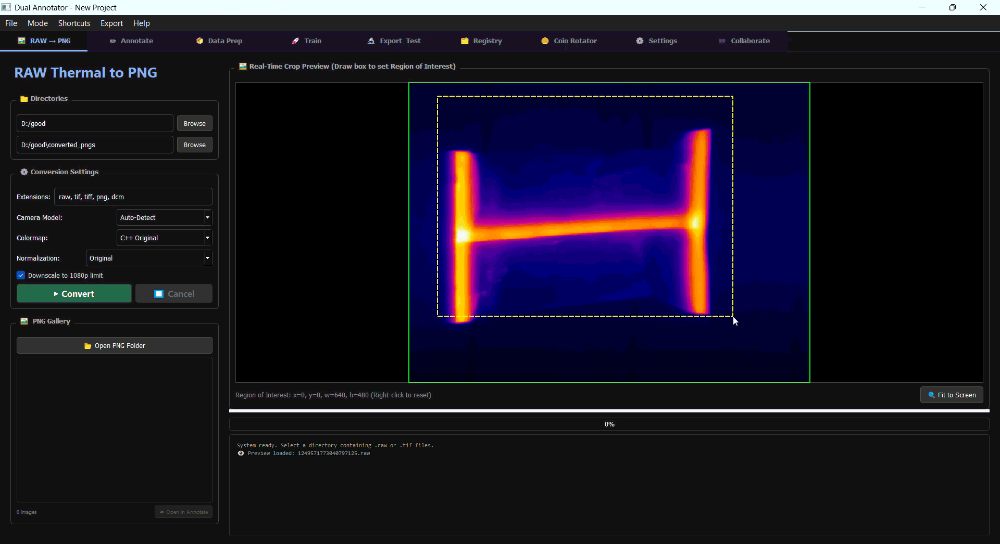
Step 4 — Configure Settings
Before converting, set the three settings in the left panel:
Tells the app the correct image resolution for reading binary raw data. Use Auto-Detect if unsure — it matches file size to known resolutions.
The color gradient applied over the grayscale thermal data. C++ Original matches the legacy software palette exactly. See Colormaps for a visual comparison.
Controls how 16-bit temperature values are scaled into the 0–255 range. See Normalization Modes for details.

Step 5 — Convert
Click the green ▶ Convert button. The progress bar fills as each file is processed and the console log shows each file's status in real-time.
Click ⏹ Cancel at any time to stop — already converted files are kept.

Step 6 — PNG Gallery
When conversion finishes, the PNG Gallery auto-populates with all converted images. Click any thumbnail to preview it. Use ↑ ↓ arrow keys to flip through them without touching the mouse.
Hit ✏️ Open in Annotate to instantly load the output folder into the annotation canvas.

Colormaps
A colormap remaps grayscale temperature intensity into a color gradient — making it easier to distinguish hot and cold regions visually. The same raw image looks very different under each colormap. Pick the one that makes defects or regions of interest most visible for your use case.

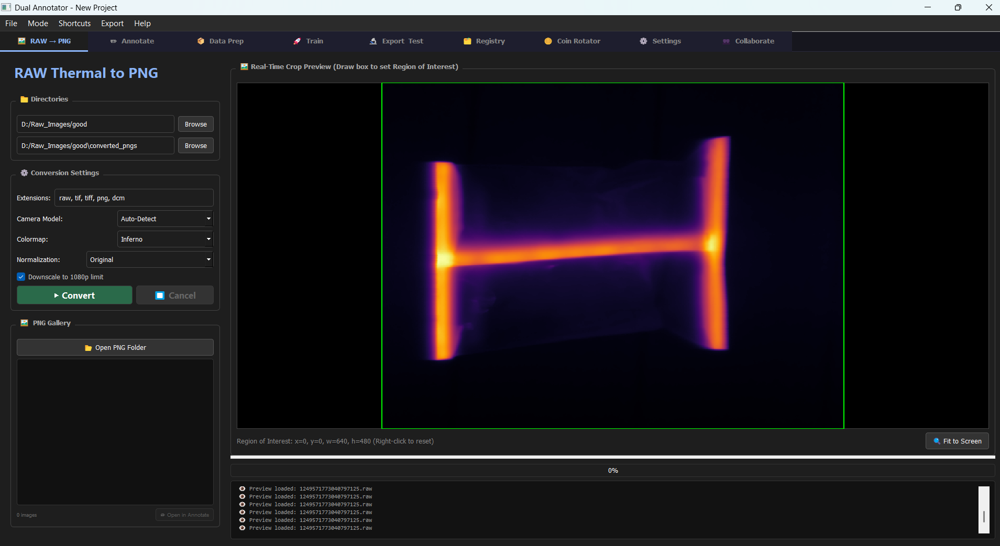
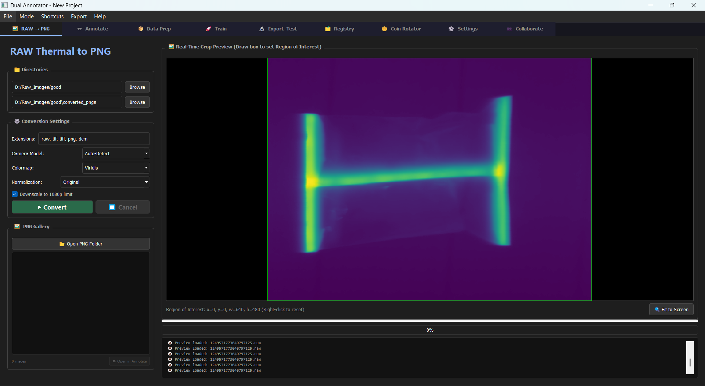
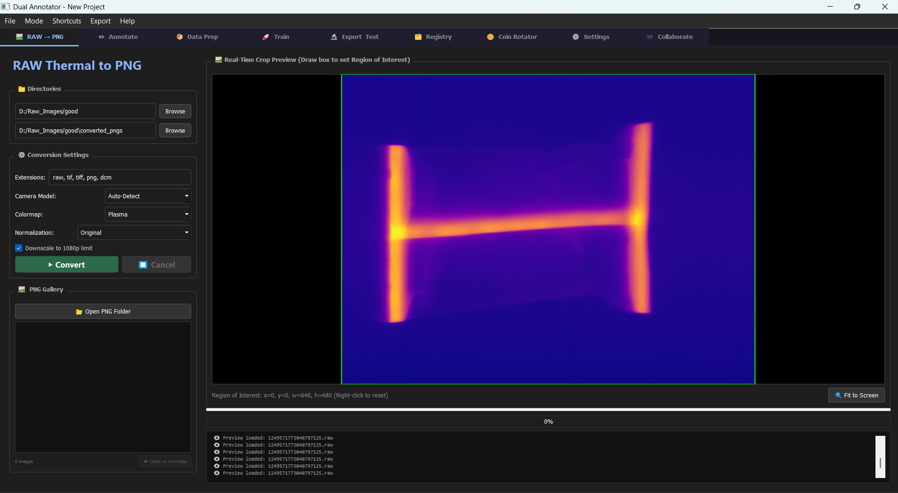

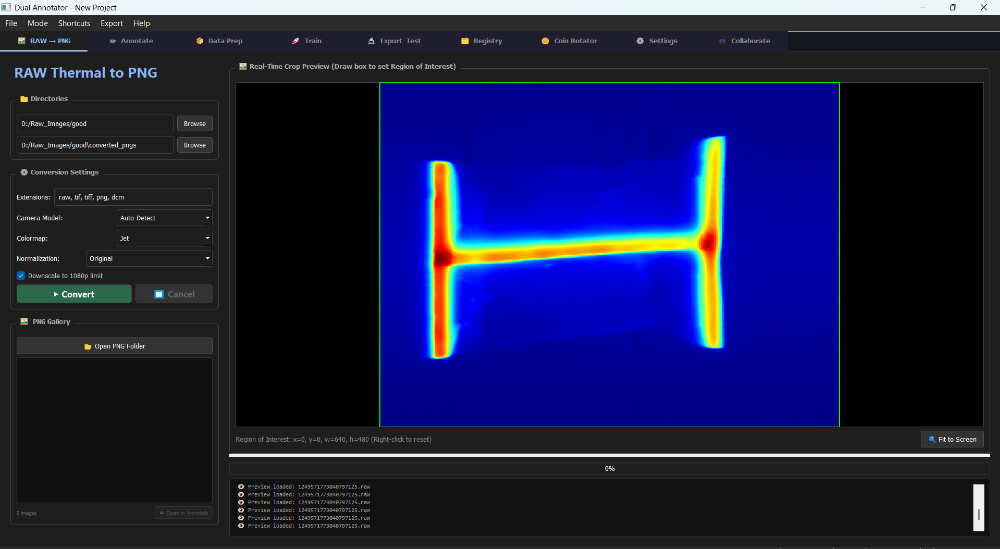
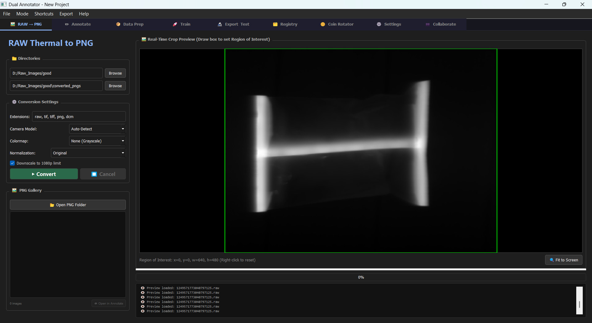
Normalization Modes
Normalization controls how 16-bit values (0–65535) are compressed into 8-bit range (0–255) before the colormap is applied. Different modes handle sensor noise, dead pixels, and contrast very differently.
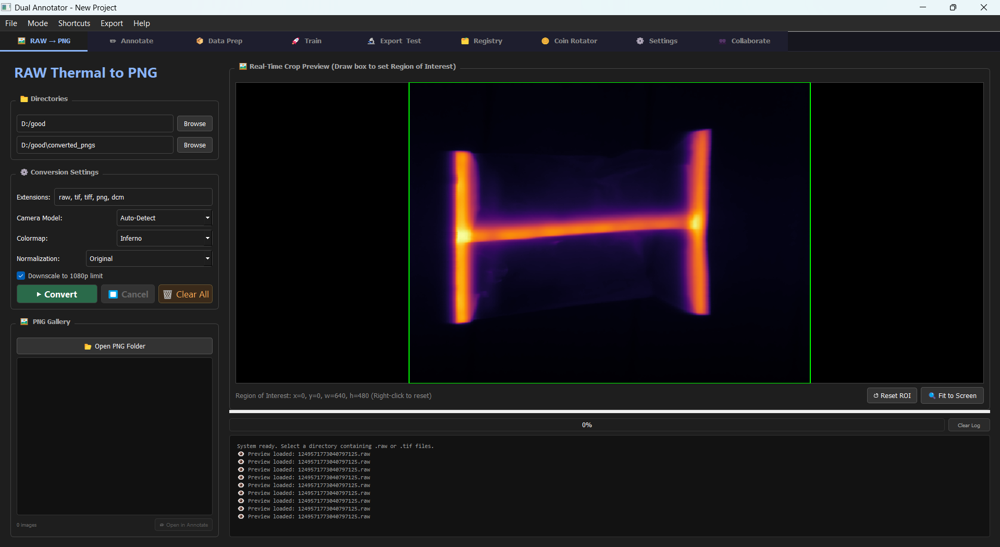
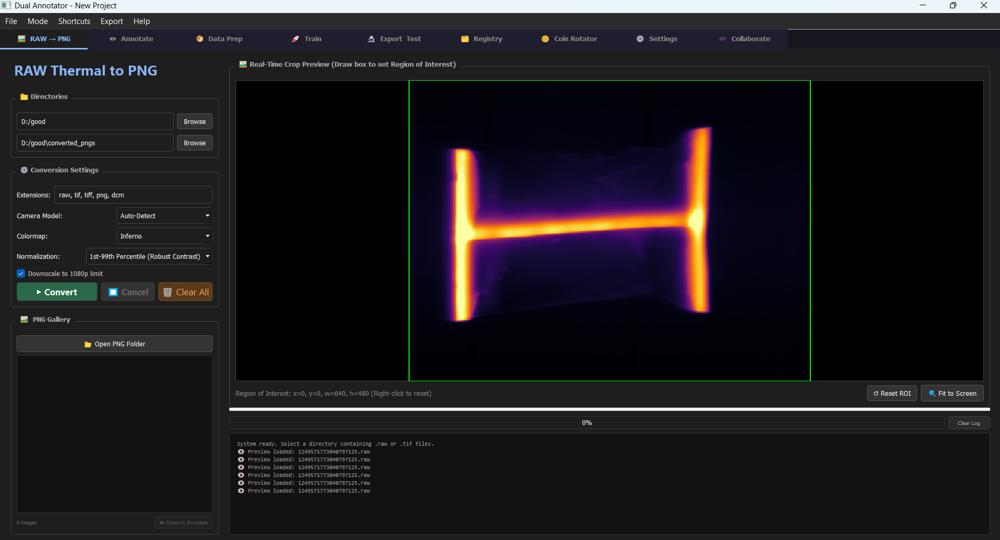


Camera Models
Since .raw files are plain binary data with no header, the resolution must be specified so
the app knows how to reconstruct the image grid. Use Auto-Detect to match file size to a
known resolution automatically.
| Model | Resolution | Notes |
|---|---|---|
| Auto-Detect | — | Matches file byte count to known resolutions |
| FLIR A35 | 320 × 256 | |
| FLIR A65 | 640 × 512 | |
| FLIR A70 | 640 × 480 | |
| FLIR A6705 | 640 × 512 | |
| CALIBIR 320 | 320 × 240 | |
| CALIBIR 640 | 640 × 480 | |
| FLIR A50 | 464 × 348 |
Tips & Tricks
Google Drive Desktop
All trained model versions, datasets, and registry entries are saved to Google Drive. DualAnnotator writes directly to a local folder that Google Drive syncs automatically — so you must have Google Drive for Desktop installed and signed in before using Data Prep or Training.
How to install
Go to drive.google.com, click the Settings gear → Get Drive for desktop. Download the installer for Windows.
Run the installer and sign in with your Google account. Once complete, Google
Drive appears as a folder on your PC — typically at
C:\Users\YourName\Google Drive\My Drive or as a mapped drive letter
(G:\My Drive).
Open File Explorer and find the Google Drive folder. Copy its full path — you will paste this into the Settings tab next.

Settings Tab
Before running any Data Prep or Training, open the Settings tab and fill in the three sections below. Changes are saved immediately. Restart the app once after saving so every tab picks up the new paths.
Registry Paths
Click Browse and select the root of your Google Drive local
folder (e.g. C:\Users\You\Google Drive\My Drive). All model versions and datasets will
be organised inside a DualAnnotator/ subfolder here and synced to the cloud
automatically.
An additional folder on a fast local drive (e.g. D:\Models\Registry).
Training runs locally here for speed, then copies the output to Google Drive when done. If left
empty, training saves only to Google Drive.
Annotators
Each team member must add themselves
here. Initials are embedded in model version IDs (e.g. v1.0-MV) so you always know who
trained a given version.
Enter your full name (e.g. Mohammed Viqar) and initials (e.g. MV), then click + Add. You can add multiple annotators and remove any with the Remove button.
Overview
The Data Prep tab takes your raw annotated images and labels and organises them into the exact folder structure that YOLO and UNet training scripts expect — split into train, val, and optionally test sets. The result is a staged dataset that is handed directly to the Training tab.
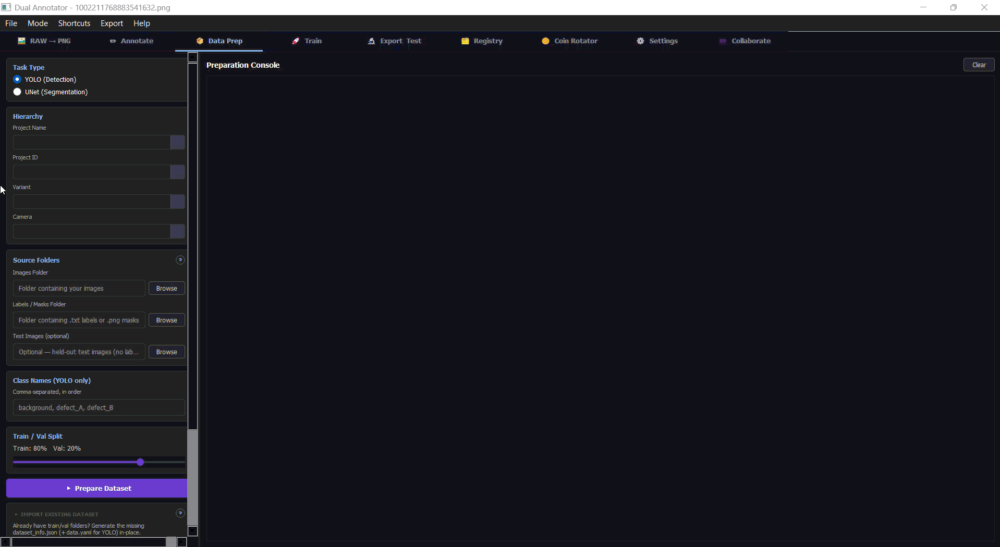
Configuration — Task Type, Hierarchy, Source Folders, Split ratio, and the Prepare button.
Preparation Console — live log, progress bar, and a result card showing counts + SHA-256 fingerprint when done.
Task Type
Select the model type that matches your annotations. This controls the expected label format and the folder structure that gets generated.
Labels are .txt files with one
row per object: class x y w h (normalised). A data.yaml is generated
automatically. Use this for bounding box annotations.
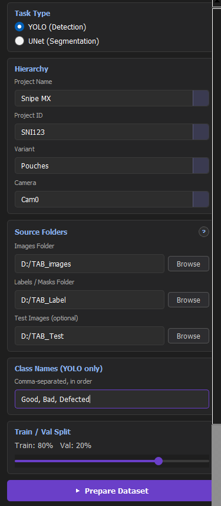
Labels are binary or grayscale
.png masks. No data.yaml is generated — only
dataset_info.json. Use this for polygon/mask annotations.
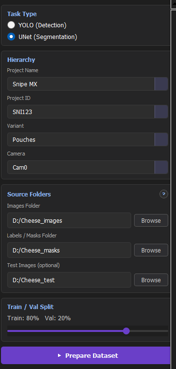
Hierarchy
The four fields below define where the prepared dataset is saved inside your Google Drive. They map to nested folders in the order shown:
The top-level project identifier (e.g. SnipeX). The dropdown shows
existing names from your registry — type a new one to create it.
A short code for the specific project or order (e.g. SLXCAP).
Dropdown is filtered by the selected Project Name.
A sub-category within the project, such as a material type or configuration
(e.g. CRC). Dropdown is filtered by Project Name + ID.
The camera or sensor identifier this dataset was captured with (e.g.
cam0). Useful when multiple cameras are used in the same setup.
Source Folders
Point to the folders containing your raw images and labels. The files do not need to be pre-split — Data Prep handles that. Label files must share the same stem name as their image.
The folder containing all your source images (.jpg,
.png, etc.). No sub-folders needed — flat structure only.
YOLO: .txt files, one per image, each line
class x y w h.
UNet: .png mask files, one per image, same filename stem.
A held-out folder of images with no labels. These are copied as-is into the
test/images/ folder of the prepared dataset — no label matching is done.
Expected folder structure
Images/ image1.jpg image2.jpg Labels/ image1.txt image2.txt Test/ (optional) test1.jpg
Images/ image1.png image2.png Masks/ image1.png image2.png Test/ (optional) test1.png
Class Names (YOLO only)
Enter your class names as a comma-separated list in the exact order they were annotated
— the order here determines the numeric class ID in the .txt label files and the
data.yaml.
.txt files is background, then background must be first in this
list.This section is hidden when UNet is selected — UNet uses pixel masks and does not need named classes at this stage.
Train / Val Split
Use the slider to set what percentage of your images go into the training set. The remainder becomes the validation set. The split is applied randomly to ensure a representative distribution.
Prepare Dataset
Once all fields are filled in, click ▶ Prepare Dataset. The right-hand console shows live progress as images and labels are copied, split, and hashed.

The button greys out and the console clears. A progress bar appears. Images and
labels are shuffled, split, and copied into the staging folder
(%LOCALAPPDATA%\DualAnnotator\staged_dataset\).
When preparation completes, a green result card shows: Train / Val / Test counts, the staged folder path, a SHA-256 fingerprint of the dataset, and the full hierarchy path it will be saved under in Google Drive.
Click → Open in Training Tab in the result card to hand the staged dataset straight to the Training tab with all hierarchy fields pre-filled.
Import Existing Dataset
If you already have a dataset that is pre-split into train/ and val/ folders,
use the Import Existing Dataset section at the bottom of the left panel. It generates
the missing dataset_info.json (and data.yaml for YOLO) in-place — no files
are moved or copied.
Select the folder that contains your train/ and val/
sub-folders. The scanner accepts two layouts:
dataset/
train/
images/
labels/
val/
images/
labels/
dataset/
images/
train/
val/
labels/
train/
val/
The app detects the layout, counts train / val / test images, and reads class
names from classes.txt or data.yaml if they exist.
If class names were not auto-detected, enter them manually. Then click Generate dataset_info.json + data.yaml (YOLO) or Generate dataset_info.json (UNet). The files are written in-place and the dataset becomes available in the Training tab.


dataset_info.json in-placedataset_info.json
Every time Data Prep runs — either via Prepare Dataset or Import Existing Dataset — it writes a dataset_info.json manifest file into the root of the output folder. The Training tab reads this file to verify the dataset and populate the run summary. Without it, the Training tab will not accept the folder.
Fields written
"coin_detector""yolo" or "unet""C:/GoogleDrive/.../dataset_v1""2025-06-01T14:32:07"800 / 100 / 50["head", "tail", "rim"]class_names. Always 0 for UNet.3"a3f9c2..."data.yaml config file. Empty string for UNet datasets."C:/GoogleDrive/.../data.yaml"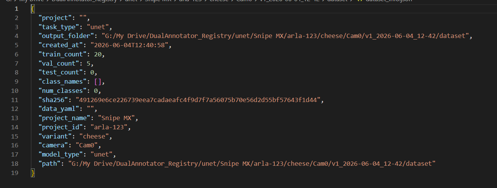
dataset_info.json as written by Data Prepdata.yaml file (YOLO only) is written alongside dataset_info.json and contains the folder paths and class names in the format YOLO training scripts expect. You do not need to edit it manually.Overview
The Training tab is where you configure and launch model training. It is split into two panels:
- Left panel — all training settings: task type, run metadata, dataset, augmentations, architecture, hyperparameters, and pre-flight checks.
- Right panel — augmentation preview before training; switches to live loss and IoU graphs once training starts, with a console log below.

Task Type
Choose the type of model to train. This controls which settings, augmentations, and architecture options are shown.
Run Info
These fields identify the training run and determine where the output model version is saved in the registry hierarchy.
Select yourself from the drop-down. Populated from the annotators added in the Settings tab. Your initials are embedded in the model version ID (e.g. v1.0-MV).
The project this model belongs to (e.g. SnipeX). Auto-populated from existing registry entries; you can also type a new name.
Short project identifier (e.g. SLXCAP). Cascades from Project Name.
The hardware or setup variant (e.g. CRC). Cascades from Project ID.
The camera slot (e.g. cam0). Cascades from Variant.
A short note describing this training run (e.g. Added thermal augmentation). Saved alongside the model version so you can track what changed between runs.
Dataset
Point the trainer at the staged dataset that Data Prep produced.
dataset.info file inside the output folder. The Training tab reads this file to get the image count, class names, and split details. If dataset.info is missing — for example from a manually assembled folder — the trainer will not recognise the dataset. Always use a folder produced by the Data Prep tab.Click Browse and select the root of your staged dataset — the folder produced by Data Prep that contains train/, val/, and dataset.info. Once selected, the app reads the info file and shows a summary (image count, class count) and loads thumbnails into the Augmentation Preview panel on the right.
Browse to an existing .pt (YOLO) or .ckpt (UNet) checkpoint to fine-tune from that starting point instead of training from scratch. Click ✕ Clear to remove it and start fresh.
Augmentations (UNet only)
A collapsible panel that appears only in UNet mode. YOLO uses its own built-in augmentation pipeline. Two categories are available — Geometric (spatial transforms) and Photometric (colour and noise). Each augmentation can be toggled on/off and its parameters tuned with sliders.
Every augmentation has a Probability slider (p) that controls how often it is applied to each image during training. A value of 0.5 means the augmentation is applied to roughly half the images per epoch. Set it lower if the effect is strong; higher if you want it applied more aggressively.

Geometric
Photometric
Architecture
The Architecture section changes depending on the selected task type.
UNet Mode
Choose the segmentation architecture: Unet, UnetPlusPlus, MAnet, Linknet, or FPN. Unet is the standard choice; UnetPlusPlus often improves accuracy at the cost of speed.
The backbone feature extractor: efficientnet-b0 through efficientnet-b4 (lighter → heavier), resnet34, resnet50, resnet101, mobilenet_v2. EfficientNet-b3 is the default — a good balance of accuracy and size.
imagenet — start from ImageNet pre-trained weights (recommended, converges faster). none — train the encoder from scratch.
YOLO Mode
Choose Detection for bounding-box output or Segmentation for instance-mask output. Switching automatically adjusts the available model list.
From smallest to largest: yolov8n (nano), yolov8s (small), yolov8m (medium), yolov8l (large), yolov8x (extra-large). Larger models are more accurate but slower to train and infer.
YOLO Advanced Sections
These collapsible sections appear only in YOLO mode. Defaults are sensible for most projects — only tune if you know what you're changing.

Hyperparameters
Core training configuration. All values persist automatically between sessions.
Number of full passes over the training set. Default: 100. Early stopping can halt training sooner if validation loss stops improving.
Images per gradient update. Default: 4. Increase if you have a GPU with enough VRAM; decrease if you hit out-of-memory errors.
Initial learning rate. Default: 0.001 (UNet) / 0.002 (YOLO). Lower values are safer but converge more slowly.
Input resolution for UNet training. Default: 320 × 240. All images are resized to this before training.
YOLO uses a single size for both dimensions. Default: 640. Must be a multiple of 32.
Epochs with no improvement before training stops automatically. Default: 10 (UNet) / 40 (YOLO).
Background threads for data loading. 0 = main thread only (recommended on Windows). Increase for faster loading on Linux/Mac.
cpu — train on the processor (slow). cuda:0 — train on GPU 0 (much faster). cuda:1 — second GPU for multi-GPU systems.
UNet-only Hyperparameters
Input image channels. 3 for colour RGB, 1 for grayscale. Default: 3.
Segmentation output classes including background. E.g. 1 object class + background = 2. Default: 2.
Multiply dataset size by this factor per epoch. Useful when the dataset is very small. Default: 1 (no repetition).
Metrics to Track
Select additional metrics to compute and log during training. Loss and IoU / mAP50 are always logged.
Pre-flight Checks
Click Run Checks to validate your configuration before starting training. The checks verify:
- A dataset folder is selected and contains images
- An annotator is chosen
- Project Name, Project ID, Variant, and Camera are filled in
- Required Python packages (torch, segmentation_models_pytorch, ultralytics) are installed
- The selected device (CPU / CUDA) is available
Each check shows a green ✓ (pass) or red ✗ (fail) with an explanation. Use Copy Diagnostic Info to copy the full report to the clipboard for troubleshooting.
Augmentation Preview
Before training starts, the right panel shows a three-column augmentation preview.
Thumbnail list of up to 60 images from your dataset. Click any thumbnail to view it full-size. Navigate with the ‹ / › buttons or the Left / Right arrow keys.
Full-size view of the selected image, unmodified.
The same image after all enabled augmentations are applied. Updated each time you click ▶ Run Batch Preview.
Live Training Metrics
Once training starts, the right panel switches to live metric graphs — two charts updating after each epoch.

Training Console
Below the graphs, the Training Console streams all output from the training process in real time — epoch progress, loss values, warnings, and errors. A progress bar appears above the console during training.
Click Clear to wipe the console at any time. When training completes, a green result card appears below the console showing the saved version folder path and an Export to ONNX button.
Start Training
Once all settings are configured and pre-flight checks pass, click ▶ Start Training. The right panel switches to live metrics and the console begins streaming output.
Stop Training
During training the ▶ Start Training button becomes ⬛ Stop Training. Click it to request a graceful stop — the current epoch finishes, the best checkpoint is saved, and the result card appears.

Export to ONNX
After training completes, a green result card appears below the console. Click ⚙ Export to ONNX to convert the trained model to ONNX format — a portable, framework-independent format used for production deployment and the Export & Test tab.

manifest.json
At the moment training starts, DualAnnotator creates a manifest.json file inside the model version folder on Google Drive. This file is the single source of truth for everything about that training run — it is updated live as training progresses and finalised when the run ends. The Registry tab reads this file to display version details and power the Compare view.
.tmp file first, then moved into place. If the file becomes corrupted, the version will show as "unknown" in the Registry.Top-level fields
"v3_2026-05-21_14-11""yolo" or "unet""training", ends as one of the terminal states."training" → "completed" / "crashed" / "cancelled" / "partial"true as the very last write after a completed or partial run — signals to teammates that Google Drive has fully synced this version.false while training or if crashed"Alice""increased batch size, added flip aug"finished_at is null while training is active."2026-05-21T14:11:03"project: "unet/SnipeX/SLXCAP/CRC/cam0"Nested objects
absolute_path — full path to dataset folder on this machinerelative_path — fallback path relative to a datasets rootsha256 — hash to detect if dataset changes after trainingtrain_count / val_count / test_count — image counts per splitclasses — list of class names (YOLO); empty for UNetnum_classes — count of classesarchitecture — model backbone (e.g. yolov8n, Unet)encoder / encoder_weights — UNet only (e.g. resnet34 / imagenet)epochs / batch_size / learning_rateimage_width / image_height / in_channels / out_classesdevice — "cuda" or "cpu"null if training never completed an epoch.best_val_loss / best_val_iou / best_epochfinal_train_loss / final_val_lossfinal_train_iou / final_val_iouweights — "best.pt" once savedonnx — "best.onnx" after exportcurves_plot — loss/IoU curve imagesample_preds — sample prediction imageexported — true / falseopset_version — ONNX opset used (default 11)input_shape — model input tensor shapeexported_at — ISO timestamp of exportcrash_info is null normally; set to {"reason": "...", "hint": "..."} when the run crashes. augmentations is a dict of the augmentation settings active at training start — used when cloning a run for re-training.What It Does
The Export & Test tab lets you take a trained model version and immediately validate it against real images — without leaving the app. It has three panels:
best.pt → best.onnx. If ONNX is already present, this step is skipped automatically..pt or .onnx) over every image. Results are saved to an output folder.
Load Version Folder
The Export panel needs a version folder — the output folder that the Training tab created after a successful run. It must contain both config.json and best.pt.
Click Browse and navigate to the version folder, or simply drag the folder from File Explorer and drop it onto the dashed drop zone. The zone highlights in purple while you hover.
Once a valid folder is loaded, the drop zone turns green and shows a summary: folder name, model type (YOLO / UNet), architecture, input resolution, and whether best.onnx is already present.

config.json and best.pt. Folders without both files are rejected with a warning.Export Button
Converts best.pt in the version folder to best.onnx. A progress bar fills and the console streams the conversion output. When done, the button changes to ✓ Export complete.
If best.onnx is already present in the folder, the button is disabled automatically and shows ✓ ONNX already exported. No action needed — you can go straight to Run Inference.

Model & Folders
The Run Inference panel is independent of the Export panel — you can browse to any model file directly without loading a version folder first.
Browse to a best.pt (PyTorch) or best.onnx (ONNX) file. Both formats are accepted. When you load a version folder in the Export panel, the model field here is auto-filled with best.pt.
Select the folder containing the images to run inference on. When you browse a test folder, the Output Folder is auto-set to a results/ subfolder inside it.
Where result images are saved. You can change this to any path. The folder is created automatically if it does not exist. Click Clear to reset the model, test folder, and output folder fields all at once.
Confidence Threshold (YOLO only)
This field appears only when a YOLO model is loaded. It sets the minimum confidence score a detection must reach to be drawn on the output image.
Default: 0.25. Adjust and re-run inference to tune for your use case. UNet models do not have a confidence threshold — the mask is determined by the per-pixel class with the highest logit.
Run Inference
The button is enabled once a valid model file, test folder, and loaded config are all present. Inference runs in a background thread — the UI stays responsive. A progress bar fills as each image is processed.
The console below the progress bar streams one line per image as it completes. Errors appear inline so you can see which images failed without stopping the batch.
As each image finishes, its result is added to the Results Gallery in the bottom panel immediately — you don't need to wait for the full batch to complete.
Gallery Layout
Each image processed appears as a card in the scrollable gallery. The number of columns per card depends on the model type.
Each card shows the filename above the images. Result files are saved to the output folder with the same filename as the input. Click Clear in the gallery header to remove all cards without deleting the saved files.
Zoom Controls
The − and + buttons in the gallery header resize all images simultaneously. The percentage label shows the current zoom level relative to the default.
100px — fits more cards on screen at once.780px — good for inspecting fine detail in results.config.json
When training starts, the training worker writes a config.json file into the model version folder alongside manifest.json and best.pt. It captures the complete set of settings used for that run — including all hyperparameters, dataset info, and augmentations. The Export & Test tab reads this file when you load a version folder, using it to automatically detect the model type and configure the inference engine correctly.
config.json and best.pt to be accepted by the drop zone. If either file is missing the folder is rejected.Top-level fields
"yolo" or "unet""AK" / "Alice Kumar""baseline run, no augmentation"".../v3_.../dataset""" or a path to a .pt filemanifest.json.Nested objects
dataset_info.json.train_count / val_count / test_countclass_names / num_classes / sha256absolute_path — path to the version-local dataset copyrelative_path — always "dataset" (sibling folder)model_type is "yolo".architecture — e.g. Unet, yolov8nencoder / encoder_weights — UNet onlyin_channels / out_classesepochs / batch_size / learning_rateimage_width / image_heightdevice — "cuda" or "cpu"num_workers / repeat_factorearly_stopping_patience / extra_metricsyolo_optimizer / yolo_lrf / yolo_momentumyolo_weight_decay / yolo_warmup_epochs / yolo_cos_lryolo_box / yolo_cls / yolo_dfl / yolo_dropoutyolo_overlap_mask / yolo_mask_ratioyolo_hsv_h / yolo_hsv_s / yolo_hsv_vyolo_fliplr / yolo_flipud / yolo_degreesyolo_translate / yolo_scale / yolo_mosaicyolo_mixup / yolo_copy_paste / yolo_close_mosaicyolo_amp / yolo_cache / yolo_save_period / yolo_plotsconfig.json and manifest.json are complementary — config.json is what the training script reads to know what to do, while manifest.json is what the Registry reads to know what happened. They overlap on hyperparams and dataset info by design so each is self-contained.What is the Registry?
The Registry is DualAnnotator's model version database. Every time you train a model — whether it completes, crashes, or is cancelled — a record is automatically written to Google Drive. The Registry tab lets you browse all those records, inspect their training details, compare two versions side-by-side, and take actions like re-exporting to ONNX or cloning a run to retrain.
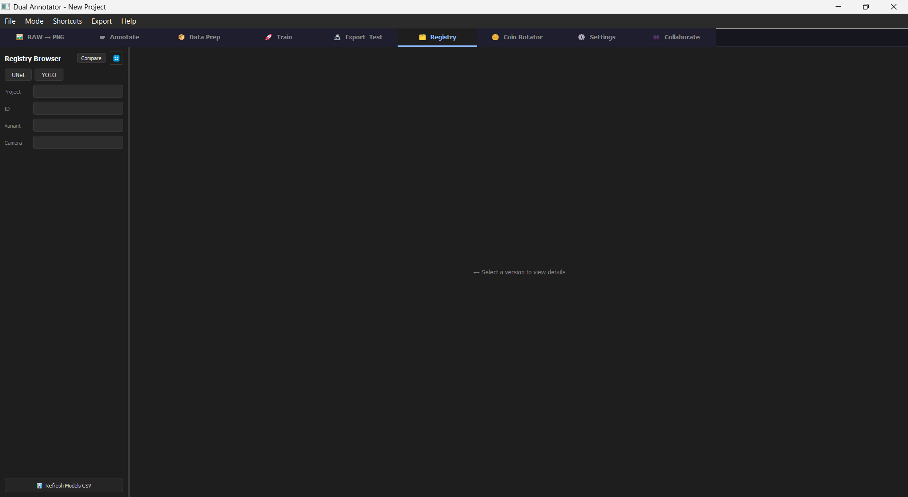
Model Type Filter
At the top of the left panel are two toggle buttons — UNet and YOLO. Clicking one activates it (highlighted in blue) and loads only projects of that type into the cascading dropdowns. Clicking the same button again deselects it and resets the panel.
Cascading Filters
Below the model type toggles are four dropdowns that narrow down the list step by step. Each dropdown is populated only after the one above it is selected — so ID options only appear once a Project is chosen, and so on.
The top-level project name — e.g. coin_detector. Contains one or more Project IDs underneath it.
A sub-grouping within the project — typically a date or experiment identifier. If only one ID exists it is auto-selected.
A named configuration variant — e.g. baseline, augmented. Auto-selected when only one exists.
The camera source for this run — e.g. cam_A, overhead. Once selected, all version cards for that leaf node are loaded into the list below.
Version Cards
Once a Camera is selected, the scrollable list fills with one card per training run. Each card shows a quick summary — click any card to load its full detail in the right panel.
v20250601_143207Unet (resnet34) or yolov8nBest IoU: 0.8712 Jun 1, 2025 14:32Storage & CSV
At the bottom of the left panel a small label shows the total disk space used by all versions under the currently selected Camera node — weights, ONNX files, and manifests combined.
Clicking this button scans the entire registry and writes a models_registry.csv file to the Google Drive root. Each row is one version with all its hyperparameters and metrics — useful for filtering and sorting outside the app in Excel or Python.
Version Detail
Clicking a version card loads the right panel with the full manifest for that run. The detail view is divided into sections — Dataset, Hyperparameters, Metrics, Artifacts, and optionally Crash Info.
The version ID is shown in bold at the top. The status badge sits beside it. Below the header is the commit message you typed before training — shown in italic muted text as a reminder of what this run was for.
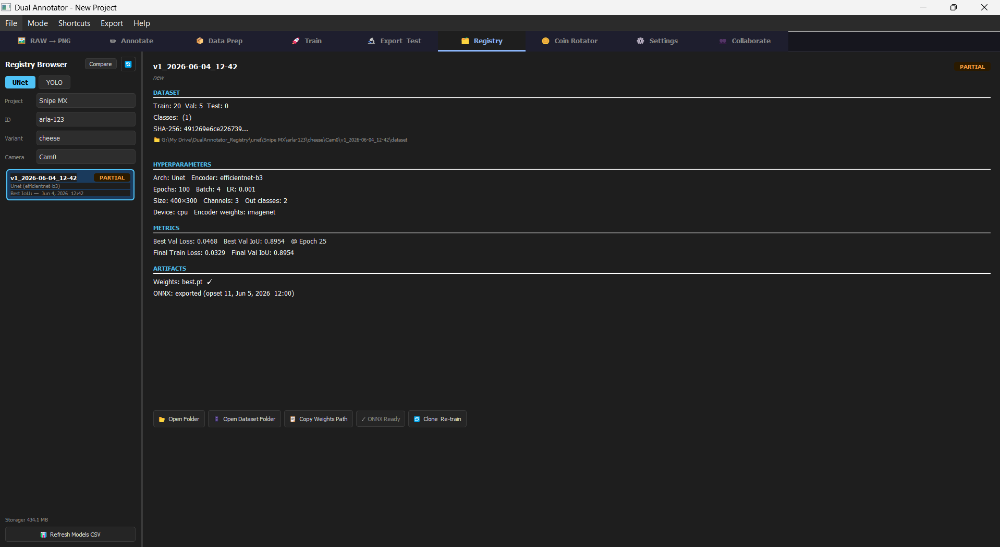
Dataset
The Dataset section of the detail view shows what data was used to train this version.
Train, Val, and Test image counts — taken from the dataset_info.json at the time of training.
Class names and count. YOLO only — UNet runs show 0 classes since they use binary masks.
A hash of the dataset at training time. If the dataset folder still exists on this machine, the Registry reads its current dataset_info.json and compares hashes. If they differ, a yellow warning appears — meaning the dataset has been modified since this model was trained, so the version's performance may not reflect what training on the current data would produce.
The absolute path to the staged dataset folder. If the folder is found on this machine, the path is shown with a folder icon and the Open Dataset Folder button is enabled. If not found (e.g. on a different machine), it shows "Dataset not found on this machine".
Hyperparameters
The exact settings used for this training run, recorded at the moment training started.
Metrics
Training outcomes recorded when the run finished or was stopped.
Artifacts
Files produced by the training run and stored in the version folder on Google Drive.
The best model checkpoint saved by the trainer. A ✓ is appended when the file is confirmed to exist on disk. This is the file used for ONNX export and inference.
Shows whether the model has been exported to ONNX. If exported, the opset version and export date are displayed. If not, the Export ONNX button in the action bar is enabled for completed runs that have weights.
Crash Info
This section appears only when a version has status CRASHED. It shows the crash reason and a hint for fixing it.
Action Buttons
A row of buttons at the bottom of the detail view lets you act on the selected version.
Opens the version's folder in Windows Explorer — the folder on Google Drive that contains best.pt, config.json, manifest.json, and optionally model.onnx.
Opens the staged dataset folder that was used to train this version. Only enabled when the dataset path is found on the current machine.
Copies the full path to best.pt to the clipboard. Useful for pasting into other tools or scripts. A small "✓ Copied" confirmation appears briefly.
Converts best.pt to model.onnx and writes it into the version folder. Only enabled for completed runs that have weights and have not yet been exported. A thin progress bar appears while the export runs. Once done, the button changes to "✓ ONNX Ready" and the artifact line updates.
Loads the selected version's hyperparameters and dataset path back into the Training tab so you can start a new run with those settings as a starting point. Available for completed, crashed, cancelled, and partial runs. The original version is not modified.
Compare Mode
Compare mode lets you pick two versions from the same Camera node and view them side-by-side with automatic difference highlighting.
Click the Compare button in the top-right of the left panel. It turns orange when active. A hint label appears: "Click a card for [A], click another for [B]".
Click any version card. It highlights in blue — that is slot A. Clicking the same card again deselects it.
Click a second card. It highlights in orange — that is slot B. The right panel immediately shows the side-by-side comparison.
The comparison is split into four sections — Dataset, Hyperparameters, Metrics, Artifacts. Values are colour-coded: green = better, red = worse, yellow = different (no clear winner), white = identical. For numeric metrics, "better" means lower loss or higher IoU.
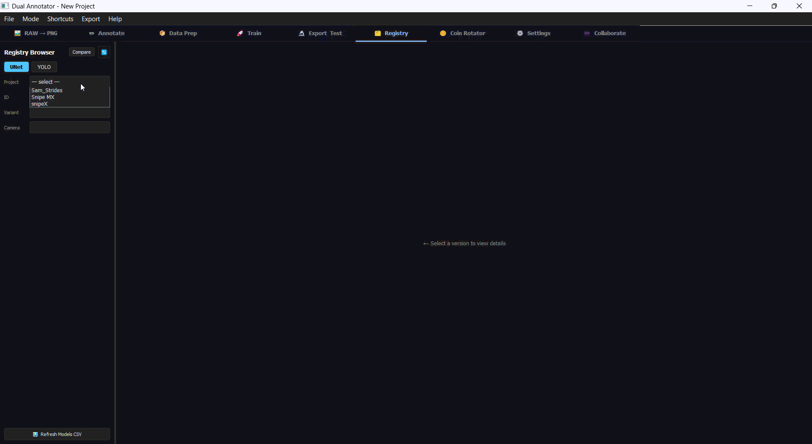
Status Badge Reference
Every version card and detail header shows a status badge. Here is what each colour means.
best.pt is saved. ONNX export and re-train are available.models_registry.csv
Saved at {gdrive_root}/models_registry.csv — a flat spreadsheet with one row per trained version across all projects. Generated automatically each time the Registry tab loads, and on demand via 📊 Refresh Models CSV. Open it in Excel, Google Sheets, or Python to sort, filter, and track models outside the app.
deployed and deployed_date columns are the only columns you should edit manually. Every regeneration preserves the values you entered there — all other columns are overwritten from the manifest.Columns
v3_2026-05-21_14-11unet/SnipeX/SLXCAP/CRC/cam0class_names are pipe-separated (|) to stay CSV-safe.head|tail|rimyes, production, or any label you prefer. Preserved across CSV regenerations.yes or production_v22026-05-15registry_settings.json
Stored locally at %LOCALAPPDATA%\DualAnnotator\registry_settings.json — this is the app's own config file, not a Google Drive file. It remembers your GDrive path, annotator list, and the last staged dataset between sessions. Unlike the other JSON files, this one is safe to keep as-is across reinstalls since it lives in AppData rather than the project folder.
"C:/Users/Alice/Google Drive/My Drive/Registry""" if not configuredname and initials — initials are stored in manifest.json as the annotator field.[{"name": "Alice Kumar", "initials": "AK"}]{} if no dataset has been prepared yet
registry_settings.json as stored in AppDatagdrive_root in the Settings tab. The app will re-read this file on the next launch.What It Does
The Coin Rotator tab solves a common problem in coin datasets: images are captured at random orientations, so the year text points in all different directions. Before training a model, all coins should face the same way.
The process is two phases:
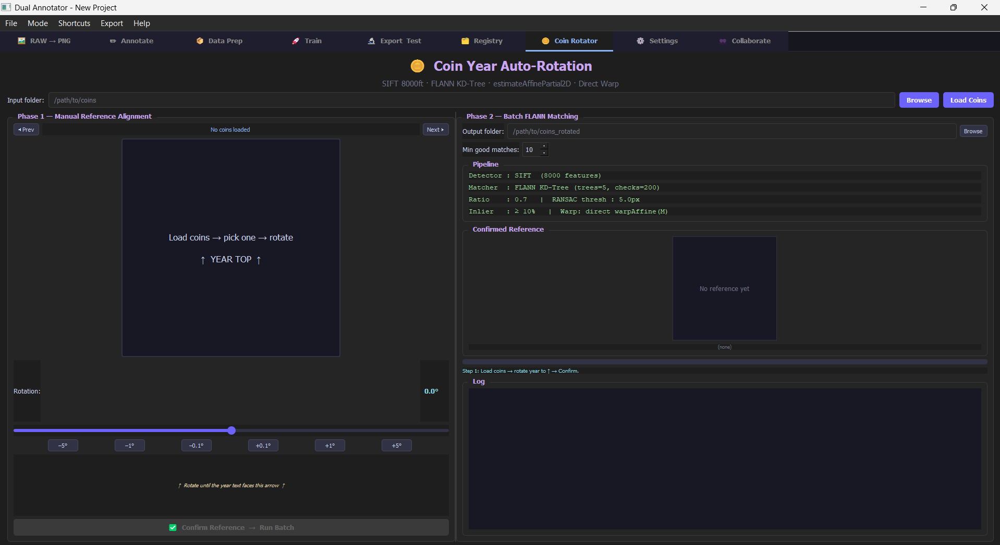
Load Coins
Start by pointing the tab at the folder that contains your coin images.
Click Browse next to Input folder and select the directory containing all your coin images. Supported formats: .bmp, .png, .jpg, .jpeg, .tiff, .tif.
Click Load Coins. The app scans the folder, loads all valid images, and displays the first coin in the preview canvas on the left. The status bar shows how many images were found. The output folder is automatically set to a coins_rotated/ subfolder inside your input folder.
Use ◀ Prev and Next ▶ to browse through the loaded coins. Pick a coin with a clearly visible year — it will produce the best feature matches. The filename and position (e.g. 3 / 120) are shown above the canvas.

Rotate to Align
Once a coin is selected, rotate it until the year text points straight up. The preview updates live as you drag.
Drag the Rotation slider left or right. The range is −180° to +180° with 0.1° precision (the slider stores values ×10 internally). The current angle is shown in cyan next to the slider label.
Six nudge buttons let you make precise adjustments without dragging: –5°, –1°, –0.1°, +0.1°, +1°, +5°. Use the coarse buttons to get close, then the ±0.1° buttons to land exactly on the right angle.
The hint below the canvas reads "Rotate until the year text faces this arrow ↑". Keep rotating until the year number is upright and pointing toward the top of the preview square.

Confirm Reference
Once the year is pointing up, lock in the reference and immediately start the batch.
This saves the rotated coin as reference_aligned.bmp in the input folder, displays its thumbnail in the Confirmed Reference box on the right panel, and immediately starts the batch alignment process.
reference_aligned.bmp. If you run the batch again later, you can reload the same folder — the reference is already there.Output Folder
The output folder is where aligned coins are saved. It defaults to coins_rotated/ inside your input folder when you click Load Coins, but you can change it.
Edit the path directly or click Browse to choose a different location. The folder is created automatically if it does not exist yet.
The minimum number of FLANN feature matches required before a coin is considered alignable. Default: 10. Lower it if many coins are being skipped; raise it if you are getting bad alignments. Coins that do not reach this threshold are skipped and logged.
Pipeline Info
The Pipeline box in Phase 2 shows the exact settings the batch runner uses. These are fixed — no need to configure them.
Run & Results
The batch starts automatically once you confirm the reference. Everything runs in the background — the UI stays responsive.
A progress bar fills as each coin is processed. The status label below it shows the current filename and position (e.g. Processing 42 / 120 — coin_042.bmp).
The log console streams a line for every coin: [✓] for successful alignments (shows keypoint count, good matches, inliers, inlier ratio) and [✗] for skipped coins with the reason.
When the batch finishes, a dialog shows the final count — how many coins were aligned (✓) and how many were skipped (✗). A rotation_log.json is saved in the output folder with the full per-coin record for review.

Understanding the log
kp — keypoints foundgood — matches after ratio testinliers/good — RANSAC inliers% — inlier ratio· good=3 — below Min Good Matches
· inlier ratio 0.08 < 0.10 threshold
· No valid affine transform found